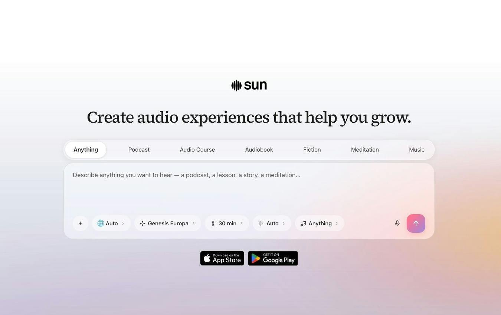

先决定要听什么形式
拿到一份准备复习的讲义，SUN的网页可以先选播客或课程，再附上文件并描述目标。公开创作器把语言、声音、模型和时长摆在同一处，用户不必先进入手机才能安排内容。开发者这次明确把新网页与API作为两个入口：前者供人直接创作，后者让程序提交课程要求并取回节目。此前SUN已经有手机产品，Product Hunt还列出10月30日的ChatGPT版本，因此不能把这次网页发布说成整款产品首次出现。真正改变的是从桌面材料开始制作音频的路径。
SUN Web & API · 软件入口更新 · 开发者发布

拿到一份准备复习的讲义，SUN的网页可以先选播客或课程，再附上文件并描述目标。公开创作器把语言、声音、模型和时长摆在同一处，用户不必先进入手机才能安排内容。开发者这次明确把新网页与API作为两个入口：前者供人直接创作，后者让程序提交课程要求并取回节目。此前SUN已经有手机产品，Product Hunt还列出10月30日的ChatGPT版本，因此不能把这次网页发布说成整款产品首次出现。真正改变的是从桌面材料开始制作音频的路径。
PDF入口默认建议做双主持人节目，也允许修改成长短不同的复述或单人讲解；多个文件可以合进同一节目。厂商称内容围绕附件展开，而不是只泛谈题目。它减少了手工写口语稿和录音的工作，但把图表、脚注、公式与限定条件变成线性声音，必然需要选择组织顺序。编辑上的判断是，先用熟悉的一小段材料比较原文与成品，特别留意数字、否定词和因果关系。产品页没有给出附件事实保真率，本次也没有试听来证明这些细节已保留下来。
FAQ说明生成内容进入My space，作品有私密与公开开关，公开项可能出现在Library。网页与iOS、Android应用使用同一账号时，内容可随账号继续访问；课程与有声书会拆成课节或章节。对个人复习，重要的不只是能否生成，还包括能否把材料留在合适的可见范围，并在下一段空闲时间接着听。私密不等于设备离线处理，也不自动证明附件的保存周期或模型供应方政策。所读页面不足以回答这些问题，因此不把作品开关扩写成全面隐私保证。
开发者把API当前能力说成从提示生成音频课程并取回完成的节目，没有在公开发布帖承诺网页每种形式都已有同等接口。点击开发者页会进入登录，因此本次没有核验请求参数、异步状态、速率限制与失败扣费。FAQ提供首作免费、后续订阅或按用量购买的说明，积分按时长消耗；公开价格页只显示积分不失效，没有完整金额。计划把它接入个人阅读工具时，真正需补齐的是生成完成后如何取回、重试与核对成本，而不是只看已有一个API链接。